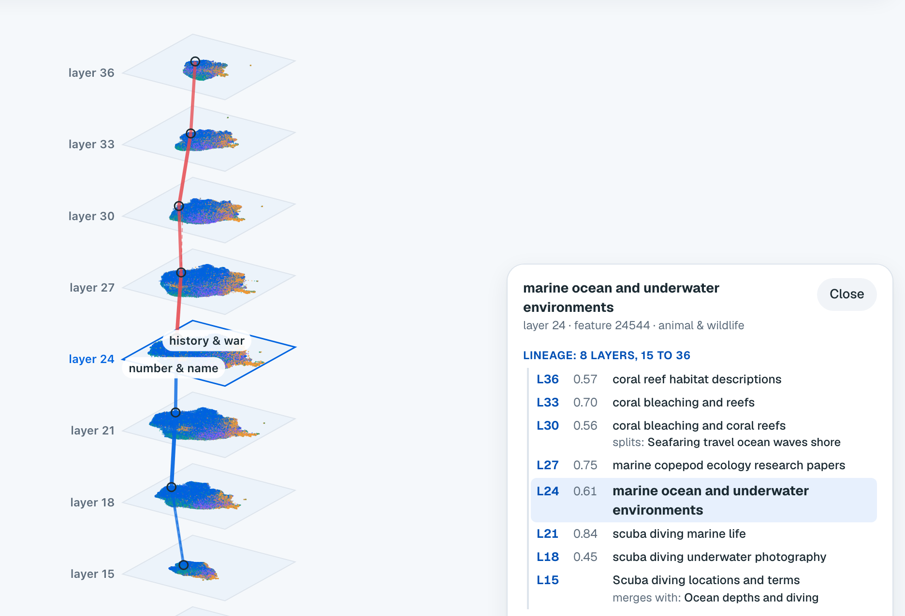

Glimmer Scope: sparse autoencoders on nine layers of Muse Glimmer 30B
Abstract
I trained TopK sparse autoencoders (SAEs) with 65,536 features each on nine layers of Muse Glimmer 30B, every third layer from 12 to 36 of its 52. Across the nine, 519,383 features fire on a held-out sample of 5 million tokens, and every one of them has a label written from its strongest contexts. I tested 170,437 features by adding them back into the residual stream on neutral prompts, with Muse Spark 1.3 grading the answers for concept and fluency. Steering peaks in the middle of the network: 9.7% to 11.4% of tested features steer cleanly at layers 21, 24 and 27, against 1.1% to 4.2% at the other six. Matching features between neighboring layers by how they fire together over 5,002,394 tokens shows a stable backbone: 43.3% of features belong to a thread that runs through all nine layers, while 30.6% live on one layer only. Contrasting in-character and plain answers gives steering directions for 28 character archetypes on every layer, and 19 of them play cleanly at layer 24. The SAEs, the code, a public atlas and a live steering demo on the full-precision model are released.
1Introduction
There are two usual ways to change what an open model does. You can prompt it and hope, or you can fine-tune it, which takes data, compute and days. A third way is to read what the model represents inside and set those things directly. Sparse autoencoders make that practical: they split what a layer computes into many features, and most of those stand for one recognizable thing, such as a subject, a style or a piece of syntax [1, 2, 3]. Adding a feature's direction back into the residual stream then steers the model toward it [6]. Open SAE suites such as Gemma Scope [5] have made this kind of work possible on other open models.
Glimmer Scope applies this to Muse Glimmer 30B, Meta's open-weights model, at a scale that covers the middle half of its depth. I built it during the Meta Global AI Developer Hackathon, between October 28 and November 4, 2026. Its contributions are:
- Nine TopK SAEs on Glimmer's residual stream, one on every third layer from 12 to 36, with 65,536 features each, released with their configs.
- A catalog and a label for every feature that fires: 519,383 features, each with its firing rate, its strongest contexts and a kind.
- A steering test of 170,437 features, graded by Muse Spark 1.3, which shows where in the network features steer.
- Cross-layer links from how features fire together, and threads that follow a concept from layer 12 to 36.
- Character archetypes as steering directions on every layer.
- A public atlas of the nine layers and a live demo that steers the full-precision 30B model.

2Model and setup
Muse Glimmer 30B (MuseGlimmerForConditionalGeneration, BF16) pairs a vision encoder with a dense text
decoder. I use only the decoder: 52 layers, hidden size 6,656, MLP size 19,968, 32 attention heads that share 2 key-value
heads (head size 128), a vocabulary of 202,048 tokens and a 131,072-token context.
Each decoder layer returns the residual stream as a plain tensor, so a forward hook on
model.model.language_model.layers[i] sees exactly what layer i+1 reads. Every SAE reads the residual
stream after its layer. When only activations are needed, the forward pass stops at that layer, which skips the rest of the
model. The nine layers are 12, 15, 18, 21, 24, 27, 30, 33 and 36: from 23% to 69% of the way through the network.
3Training the SAEs
The SAEs are TopK autoencoders in the style of Gao et al. [4]. For an input x, the encoder computes pre-activations, keeps the k = 64 largest per token, and the decoder adds up the matching decoder rows:
with 65,536 latents and unit-norm decoder rows. The scale s is fixed per layer before training so that the scaled inputs have a mean squared norm equal to the hidden size (s = √(d / E‖x‖²)), and bdec starts at their mean. Latents that have not fired for 10 million tokens count as dead, and an auxiliary loss (AuxK) asks the top 512 dead latents to reconstruct the remaining error, with a weight of 1/32.
The data is 70% web text from FineWeb-Edu [9] and 30% conversations from UltraChat [10] rendered in Glimmer's own chat template, so assistant-side features (the reasoning channel, refusals, formatting) show up next to world knowledge. Documents are packed into 1,024-token rows, and the activations go through a shuffled buffer of 1,048,576 tokens in SAE batches of 4,096. Adam runs at a learning rate of 2·10−4 scaled by √(214/216), with 500 warmup steps and a linear decay over the last 20% of training. Seven layers trained on 100M tokens and layers 12 and 36 on 50M, one GPU per layer, on Modal (H200) and on an AWS g7e instance (one RTX PRO 6000, 96 GB). Because the forward pass stops at the layer, collection ran at 9,649 to 39,718 tokens per second, and training all nine took 21.2 GPU hours.
Table 1. The nine SAEs. FVU is the fraction of variance unexplained, averaged over the last 20 logged steps. Dead latents had not fired in the last 10M training tokens. Fired counts the latents that fire at least once in the 5M-token catalog (Section 4).
| Layer | Depth | Tokens | FVU | Variance explained | Dead at end | Fired in catalog | of 65,536 |
|---|---|---|---|---|---|---|---|
| 12 | 23% | 50M | 0.200 | 80.0% | 0.48% | 61,469 | 93.8% |
| 15 | 29% | 100M | 0.227 | 77.3% | 0.94% | 60,441 | 92.2% |
| 18 | 35% | 100M | 0.272 | 72.8% | 0.91% | 59,841 | 91.3% |
| 21 | 40% | 100M | 0.300 | 70.0% | 0.87% | 59,492 | 90.8% |
| 24 | 46% | 100M | 0.315 | 68.5% | 0.98% | 58,866 | 89.8% |
| 27 | 52% | 100M | 0.308 | 69.2% | 1.09% | 57,699 | 88.0% |
| 30 | 58% | 100M | 0.285 | 71.5% | 1.35% | 55,372 | 84.5% |
| 33 | 63% | 100M | 0.239 | 76.1% | 1.60% | 54,343 | 82.9% |
| 36 | 69% | 50M | 0.255 | 74.5% | 1.72% | 51,860 | 79.1% |
Reconstruction gets harder toward the middle of the network and easier again after it: FVU goes from 0.200 at layer 12 to 0.315 at layer 24, then back down to 0.239 at layer 33. At most 1.72% of latents were dead at the end, on any layer. Layers 12 and 36 trained on half as many tokens, so their numbers are not strictly comparable with the rest.
4Catalog and labels
For every SAE I ran 5 million tokens from held-out shards of both datasets (512-token rows, 30% chat) and kept, for each latent, its firing rate, its mean activation and its 16 strongest contexts. Padding, row starts and attention-sink positions are masked out. Of the 589,824 latents across the nine SAEs, 519,383 (88.1%) fire at least once.
Muse Spark 1.3 then named them from their 8 strongest contexts, through the Meta Model API, and gave each a kind, following the automated labeling approach of Bills et al. [13]. 516,724 labels come from Spark. The other 2,659 features had contexts that would trip Meta's content filter, so a local model labeled them instead and those contexts were never sent to Spark. Figure 2 shows the kinds: 40.6% are concepts (a subject or a style), and 28.1% have no clear reading from their contexts.
5Steering tests
A feature's steering test adds its decoder direction to the residual stream after its layer, at four strengths given as fractions of the layer's median residual norm, all below the full norm, where most directions wreck the text. Glimmer answers the same four neutral prompts (for example "Describe your ideal weekend.") with greedy decoding, starting in its user-facing channel so the token budget goes to visible text. Muse Spark compares each steered answer with the unsteered one and rates, per strength, how clearly the feature's theme shows (concept, 0 to 3) and how readable the text stays (fluency, 0 to 3). A feature's score is its best concept × fluency / 9. I call a feature clean when it reaches 1 (theme dominant, text fully fluent) and partly steerable at 2/3 or more. Spark also says what the steering did, which does not always match the label.
The tests cover the features most likely to steer on each layer, so the shares below are shares of tested features, not of all features. In total 170,437 features were tested. Spark graded 155,666 of them, and 14,771 more were graded by a local model because their requests would trip Meta's content filter. Only Spark's grades are counted below, so the layers compare on one judge.
Table 2. Steering tests per layer. Clean counts features with the top grade from Spark. The last column counts character archetypes (Section 7) that a direction plays cleanly.
| Layer | Features tested | Graded by Spark | Clean | Share clean | Archetypes |
|---|---|---|---|---|---|
| 12 | 17,531 | 17,531 | 743 | 4.2% | 9 of 28 |
| 15 | 24,446 | 21,217 | 527 | 2.5% | 6 of 28 |
| 18 | 29,167 | 27,110 | 803 | 3.0% | 12 of 28 |
| 21 | 27,954 | 24,565 | 2,792 | 11.4% | 12 of 28 |
| 24 | 10,622 | 10,622 | 1,110 | 10.5% | 19 of 28 |
| 27 | 21,991 | 19,193 | 1,871 | 9.7% | 8 of 28 |
| 30 | 14,426 | 12,826 | 538 | 4.2% | 9 of 28 |
| 33 | 12,322 | 10,624 | 156 | 1.5% | 6 of 28 |
| 36 | 11,978 | 11,978 | 135 | 1.1% | 8 of 28 |
| all | 170,437 | 155,666 | 8,675 | 5.6% |
Steering peaks in the middle of the network. At layers 21, 24 and 27, 9.7% to 11.4% of tested features steer cleanly; at the other layers it is 1.1% to 4.2%, and it is lowest at the deep end (1.5% at layer 33, 1.1% at layer 36). Across all layers, 8,675 features (5.6% of those Spark graded) steer cleanly by Spark's grades. Counting both judges, 10,929 steer cleanly and 41,727 partly.
6Cross-layer links and threads
To relate features on neighboring layers, one forward pass captures the residual stream after each SAE's layer, each SAE encodes its own layer, and for every pair of neighboring layers the products of activations are summed per (lower, upper) feature pair over the same tokens. The similarity of two features is the cosine of their activation patterns,
which is 1 when they fire on exactly the same tokens in proportion. I ran it over 5,002,394 tokens and kept each feature's 8 best partners one layer up (what it turns into) and one layer down (where it comes from). This is a correlational cousin of crosscoders [7]: it needs no extra training, only the nine SAEs.
A feature's thread follows its strongest partner up and down while the similarity stays at 0.3 or more, and its span is the number of layers the thread covers. Figure 4 shows the spans of all 519,383 features.
There is a stable backbone. 43.3% of features belong to a thread that runs through all nine layers. Shallow layers keep their concepts: 62.3% of layer 12's features run all the way to layer 36. Deep layers add their own: 48.8% of layer 36's features exist on that layer only, against 15.0% at layer 12. Besides the strongest partner, the atlas also shows other partners above the threshold, which is where threads split and merge.
Table 3. One thread: the strongest-partner chain from feature 24544 of layer 24 (the Ocean feature). Similarity is to the next feature toward layer 24. Labels are Muse Spark's. The thread stops at layer 15, where its strongest partner on layer 12 falls below 0.3.
| Layer | Feature | Label | Similarity |
|---|---|---|---|
| 36 | #22854 | coral reef habitat descriptions | 0.57 |
| 33 | #38946 | coral bleaching and reefs | 0.70 |
| 30 | #65009 | coral bleaching and coral reefs | 0.56 |
| 27 | #58953 | marine copepod ecology research papers | 0.75 |
| 24 | #24544 | marine ocean and underwater environments | |
| 21 | #3335 | scuba diving marine life | 0.61 |
| 18 | #56835 | scuba diving underwater photography | 0.84 |
| 15 | #63964 | Scuba diving locations and terms | 0.45 |
Read from the bottom, the concept moves from diving as an activity (layers 15 to 21) to the ocean as a place (layer 24) to marine science and coral reefs (layers 27 to 36).
7Character archetypes
Single features rarely carry a whole character, so for 28 archetypes, from pirate captain to stoic philosopher, I looked for directions directly. Each archetype comes with user messages that suit it, and every message gets two replies, one in the archetype's voice and one plain, from the same writer so the writer's own style cancels out. Glimmer then reads both replies with no persona instruction, so a feature that fires more on the archetype side does so because of the reply itself. Features are ranked by their mean paired difference times how consistently the archetype side wins, on two thirds of the pairs; the last third is held out.
Three kinds of direction come out of it: each top feature alone, a blend of the top features weighted by their difference, and the plain difference of mean residuals (contrastive activation addition [8]), the baseline the SAE has to beat. Spark judges them on prompts that suit the archetype. Layer 24 is the best layer for characters: 19 of 28 play cleanly there by Spark's grades (Table 2), for example the pirate captain, the noir detective, the stoic philosopher and the hype coach. Of those 19, a single SAE feature plays 9 cleanly, a blend 5, and the mean-difference vector 13 (an archetype can count more than once).
8The atlas and the live demo
Each layer's map places every fired feature by its decoder direction: the directions are unit-normalized and laid out in 2D with UMAP [11] under cosine distance, so features that write similar things into the residual stream sit together. K-means on a 10-dimensional UMAP of the same neighbors splits each map into 200 regions, which Muse Spark names from their members' labels. The nine maps are then lined up by similarity transforms (rotation or mirror, scale and shift, fitted by Procrustes [12]) on mutual best partners with a similarity of 0.3 or more, chained outward from the middle layer, so a subject sits in about the same place on every layer.
The public atlas runs on Cloudflare: one Worker, the maps in R2 and full-text search over the labels in D1. It carries only positions, kinds, regions, labels and links between layers, with no vectors and no steering results, and it shows 506,397 features (Section 9).
The live demo, a Hugging Face Space on ZeroGPU, runs the full-precision BF16 model. It offers 20 dials on harmless subjects (15 single SAE features and 5 character directions, from layers 24 and 36), each of which passed Spark's steering test with the top grade. Every question is answered twice in the same batch with greedy decoding, once plain and once steered, so the steering is the only difference between the two answers.
9Safety
Content warning. These SAEs were trained on ordinary web and chat text. Like any SAE on a large language model, they contain features for violent, sexual, hateful and otherwise disturbing subjects, and steering with them can produce upsetting text.
Some findings could be upsetting, so the public material filters them. The public atlas leaves out 12,986 features on upsetting topics entirely: not only their labels but their place on the map, their share of a region and every link to them from the layers next to them, so nothing marks which feature ids they are. The keyword patterns that select them, and that screened requests to Spark, stay private. Requests that would trip Meta's content filter were never sent to Spark; those features were labeled and graded by a local model. The released SAEs contain weights and configs only, with no labels, activation data or steering results.
10Limitations
- The judge is a language model. Muse Spark's concept and fluency grades are not human ratings, and a second judge (the local model) grades more generously, which is why the shares count Spark only.
- Labels come from top contexts. A label describes where a feature fires hardest, which can miss what it does at weaker activations. 28.1% of features have no clear label.
- One run per layer. Every SAE uses one seed and one size, and layers 12 and 36 trained on half the tokens.
- A 5M-token catalog. Rare features are under-sampled, and latents that never fire in it are left out of the labels and the atlas.
- Narrow steering tests. Four neutral prompts, greedy decoding and four strengths per feature, and the tested features are not a random sample.
- Threads are correlational. Co-firing says two features fire on the same tokens, not that one computes the other, and the 0.3 threshold is a choice.
11Reproducibility
Every step is a function in modal_app.py and runs on Modal, or on any machine with one 96 GB GPU through
scripts/run_here.py:
modal run modal_app.py::train --layer 24
python scripts/run_here.py catalog --run layer24-64k-k64
python scripts/run_here.py label --run layer24-64k-k64 --everything
python scripts/run_here.py sweep --run layer24-64k-k64 --n-features 30000
python scripts/run_here.py crosslayer --runs layer21-64k-k64,layer24-64k-k64Loading a released SAE and reading a layer with it:
from pathlib import Path
from huggingface_hub import hf_hub_download
from scope.sae import TopKSAE
repo = "kroonen-ai/glimmer-scope-saes"
hf_hub_download(repo, "layer-24/cfg.json")
sae = TopKSAE.load(Path(hf_hub_download(repo, "layer-24/sae.safetensors")).parent)
values, features = sae.encode(resid * sae.cfg.input_scale) # resid: [tokens, 6656]Compute came from Modal and AWS. Labels, judging and region names used Muse Spark 1.3 through the Meta Model API.
12References
- Bricken, T., Templeton, A., Batson, J., et al. (2023). Towards Monosemanticity: Decomposing Language Models With Dictionary Learning. Transformer Circuits Thread.
- Cunningham, H., Ewart, A., Riggs, L., Huben, R., Sharkey, L. (2023). Sparse Autoencoders Find Highly Interpretable Features in Language Models. arXiv:2309.08600.
- Templeton, A., Conerly, T., Marcus, J., et al. (2024). Scaling Monosemanticity: Extracting Interpretable Features from Claude 3 Sonnet. Transformer Circuits Thread.
- Gao, L., Dupré la Tour, T., Tillman, H., et al. (2024). Scaling and evaluating sparse autoencoders. arXiv:2406.04093.
- Lieberum, T., Rajamanoharan, S., Conmy, A., et al. (2024). Gemma Scope: Open Sparse Autoencoders Everywhere All At Once on Gemma 2. arXiv:2408.05147.
- Turner, A. M., Thiergart, L., Udell, D., et al. (2023). Activation Addition: Steering Language Models Without Optimization. arXiv:2308.10248.
- Lindsey, J., Templeton, A., Marcus, J., et al. (2024). Sparse Crosscoders for Cross-Layer Features and Model Diffing. Transformer Circuits Thread.
- Rimsky, N., Gabrieli, N., Schulz, J., et al. (2024). Steering Llama 2 via Contrastive Activation Addition. ACL 2024. arXiv:2312.06681.
- Penedo, G., Kydlíček, H., Ben Allal, L., et al. (2024). The FineWeb Datasets: Decanting the Web for the Finest Text Data at Scale. arXiv:2406.17557.
- Ding, N., Chen, Y., Xu, B., et al. (2023). Enhancing Chat Language Models by Scaling High-quality Instructional Conversations. EMNLP 2023. arXiv:2305.14233.
- McInnes, L., Healy, J., Melville, J. (2018). UMAP: Uniform Manifold Approximation and Projection for Dimension Reduction. arXiv:1802.03426.
- Schönemann, P. H. (1966). A generalized solution of the orthogonal Procrustes problem. Psychometrika, 31(1), 1 to 10.
- Bills, S., Cammarata, N., Mossing, D., et al. (2023). Language models can explain neurons in language models. OpenAI.